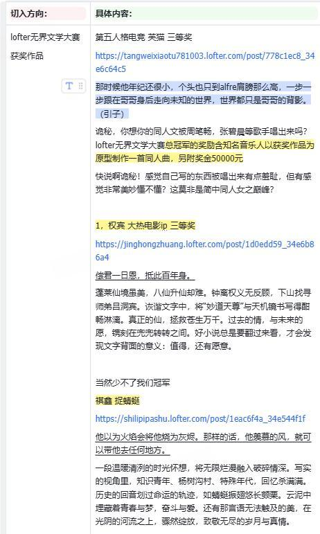
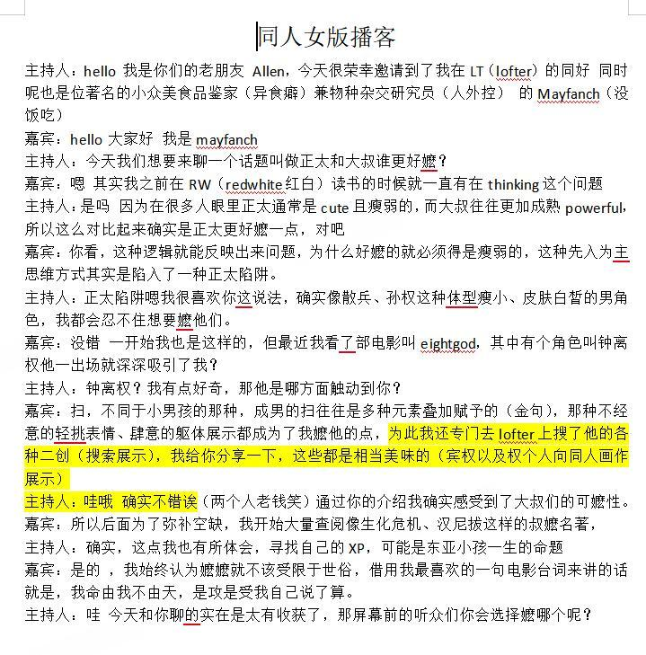

我做了什么
从建联到投流，一条线走完。每一步都有可以查的东西。
01
OUTREACH
建联与选题
代理提报和自己建联并行，先看内容类型是否匹配，再看粉丝量和报价。
- 建联 60+ 二次元高粉达人与泛娱乐垂类博主。
- 记录内容类型、粉丝画像、历史数据、报价与合作状态。
- 0 成本引入站内 10+ 高粉博主，并设站内激励机制。


02

03
SCRIPT
脚本审核
达人返还脚本后逐条改，改到能拍、能过审、也还是达人自己的语气。
- 顺逻辑、补信息点，删掉生硬的官方口吻。
- 确定分镜和画面参考，控制角色与场景的呈现。
- 把必提 tag 和口播位置提前埋进脚本。


04
VIDEO
视频输出
审成片、定文案和 tag，确认发布时间与账号状态，再放出去。
- 检查卖点是否露出、角色是否准确、画面是否可用。
- 文案、话题、tag 与活动节点对齐。
- 60 条内容按排期上线，避免同一时间互相抢量。

05
AMPLIFY
发布后控评与投流
发布不是结束。评论要维护，高潜内容要挑出来加投，低的要及时止损。
- 评论区维护，把角色和活动信息补在用户会看的地方。
- 按出价与次留调控达人账户投放。
- 把跑出来的内容结构沉淀成下一轮 brief。
-30%投放成本下降
36%+次留维持
49%次留最高
1.9CPM 最低
达人雷达：四类内容，不同任务
达人营销最容易犯的错，是只看粉丝量。真正影响结果的是内容类型是否匹配、粉丝是否重叠、 脚本能不能承载卖点、发布后能不能加投。所以我把达人分成四类，而不是一条粉丝量排序。
游戏直播
讲机制、讲版本、讲体验，适合承接核心玩家和深度转化。
20 位游戏主播 / Coser
Coser 演绎
用角色感、视觉和情绪让用户先喜欢角色，再了解游戏。
50w+单内容均曝光
泛娱乐营销号
用梗、吐槽和圈层语言破圈，把内容推到非核心用户面前。
34w+内容互动
同人创作者
在社区里做深度内容，沉淀 UGC、口碑和长尾搜索。
500+建联创作者
背景与目标
二次元社区和古风 MMO 的用户注意力分散在不同内容形态里： 有人看游戏直播，有人看 Coser，有人看泛娱乐吐槽，有人只在同人社区里活动。 目标不是“找几个大号发稿”，而是按平台和内容类型搭一张能组合调用的达人矩阵。
- 目标一：建立可复用的达人筛选、建联与分层机制。
- 目标二：把 brief、脚本、分镜、审核、控评、投流串成标准流程。
- 目标三：用内容数据反推下一轮达人选择和预算分配。
结果
- 60+ 达人、60 条内容，峰值曝光 5000w+，单条最高 1400w。
- 互动 34w+，精准新增用户近 7w+，0 成本引入站内 10+ 高粉博主。
- 游戏 MMO：20 位游戏主播 / Coser，抖音总曝光 4000w+，CPM 最低 1.9。
- 内容投流优化让成本下降 30%，次留维持 36%+，最高 49%。
复盘
达人营销的核心不是“名单”，而是“匹配”： 什么目标配什么达人，什么卖点配什么内容形式，什么内容值得加投。 这套雷达可以复用到新游戏、新版本和新平台，只需要重新校准达人和内容类型。